00读前一分钟 · 全文脉络（完形先读首句，再看结构）
完形的首句从不设空。本篇首句是一个定义句：Fluid intelligence is the type of intelligence that …——给了三样东西：话题（流体智力：短期记忆 ＋ 快速、逻辑、抽象地解新题）、文体（「X is the type of Y that …」是教科书式下定义 ⟹ 科普／科研报道，不是社论）、口吻（中性、客观，没有作者立场）。第三句的 But 才亮出全文的立意：衰老躲不掉，但某些变化未必躲不掉——后面四段都在讲「哪些变化、怎么躲」。
⭐⭐ 认文体：这是一篇「一项研究」的转述报道。第二段 One study found that … 一出，就该在脑子里摆出科研报道的固定格子：发现 → 意义 → 方法 → 结果 → 机制 → 展望 → 建议。每一格里的空都有固定的「长相」——方法格填研究动作（include · compare），结果格填测量动词（score worse on），机制格填因果扣环（attributable to），展望格填研究能做到的事（explain · treatments），建议格填生活动作（take steps · diet）。⟹ 详见 02+ 八格表。
📌 五段的节奏是「研究者的时间」与「你的时间」交替：①–④ 说研究（过去做了什么、将来希望什么），⑤ 突然把主语换成 you、时态拉回现在（there are steps you can take）——16 题段首空就站在这个换人换时的接缝上（⟹ 新卡 R313）。
00+读前背景（WebSearch 核过的事实，不读也能做题，读了更快）
| 项 | 事实 | 和题的关系 |
|---|---|---|
| 原文 | Psychology Today 网站博客文章 Belly Fat and Your Brain（2019-12，黄皮书记 12 月 19 日） | 大众心理学刊物的科普博客 ⟹ 口吻中性、句子短、末段一定落到「你能做什么」 |
| 研究出处 | 美国爱荷华州立大学 Willette 团队（第一作者 Klinedinst），论文 2019 年发表于 Brain, Behavior, and Immunity（《脑、行为与免疫》）第 82 卷；学校新闻稿 2019-12-17 | 期刊名里就有 Immunity ⟹ 第四段讲免疫机制不是插曲，是这项研究的主题 |
| 数据来源 | 英国生物样本库（UK Biobank），四千多名中老年男女 | 7 题「数据包含测量值」：研究者用的是现成的大数据库，不是自己做实验 ⟹ modified（改数据）更站不住 |
| 测量 | 直接测瘦肌肉量、腹部脂肪、皮下脂肪；追踪约六年的流体智力变化 | ③ measurements of lean muscle and abdominal fat · over a six-year period ⟹ 11 题「随着岁月流逝」的岁月就是这六年 |
| 主要结论 | 腹部脂肪多 → 随年龄流体智力更差；肌肉多 → 似有保护作用；控制年龄、教育、社会经济地位后仍成立 | 4 accumulation（脂肪「多」是坏方向）· 10 scored worse |
| 免疫中介 | 腹脂与智力的关联部分经由免疫系统的变化传导，男女表现不同（具体是哪类免疫细胞，各家报道说法不一，这里不写细节） | 12 attributable to（女性：归因于免疫变化）↔ 13 involved（男性：免疫似乎没参与） |
| 研究性质 | 观察性、相关性研究——研究者自己也说只发现了相关，尚不能确定因果 | ⭐ 所以原文通篇用 are associated with · may be · might help · did not appear · perhaps——5 题只能填 possibility（⟹ 02++++ 语气表） |
| 流体 vs 晶体智力 | 心理学经典二分：流体智力（临场推理）中年后下降；晶体智力（知识、词汇）可持续增长到老年 | 首句的定义 ＋ 1、2 题的曲线：只有流体智力是「先升、后平、再降」 |
| 地中海式饮食 | 以蔬果、全谷物、豆类、鱼、橄榄油为主，少红肉与加工食品；常被推荐用于心血管与认知健康 | 20 题：high in fiber · eliminates highly processed foods ⟹ 是「吃的」 |
| 考卷改动 | 黄皮书只标「源自」；本页按新口径不抓原刊全文，不做原刊对照 | — |
01完形正文（本机识别成文字 · 20 空 · 点空格跳到该题）
📄 原文由你的浏览器从原卷第 1 页识别成文字（每句末尾「原卷」可切回扫描图，「校对」可改错字）｜ 🟨 正文里的空格按钮＝跳到 02 对应的解析卡（先自己选，再看解析；答过的空会就地填上答案词）｜ 选中任意单词弹「查有道」（触屏长按选词；切回原卷后在扫描图上点词也能查）｜ 每句下方「↘ 跳到长难句精析」按钮跳 07 节（六句有精析）｜ 🟡 黄底词＝本句重难点词，点开看词根／辨析 ｜ 每段「意」＝该段意译（按句意转述，非逐字翻译）
① 现象：流体智力先升到顶、再持平、后下降——但下降未必躲不掉
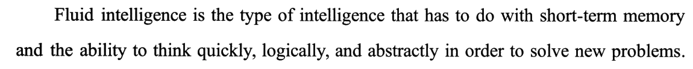
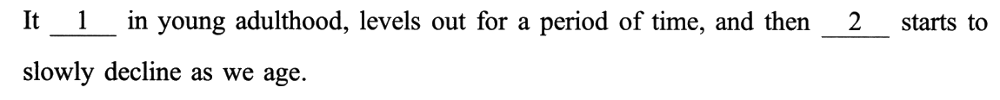
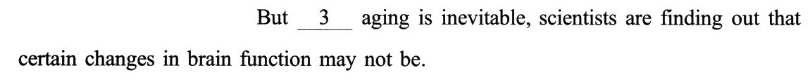
② 发现 ＋ 意义：肌肉少、腹脂多 ↔ 流体智力降 ⟹ 生活方式可能有用
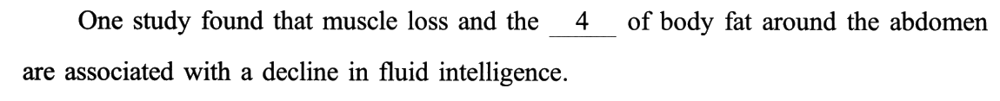
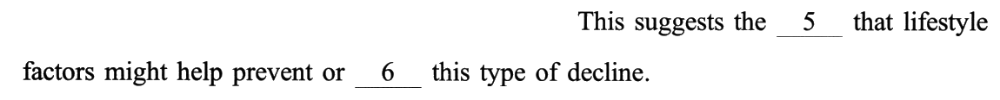
③ 方法 ＋ 结果：拿测量数据和六年的智力变化作比较——腹脂高的中年人越往后得分越差
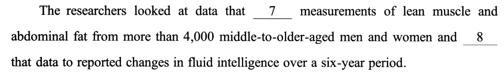
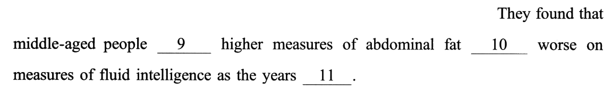
④ 机制 ＋ 展望：女性经由免疫变化、男性与免疫无关——希望将来解释这个差异、分性别治疗
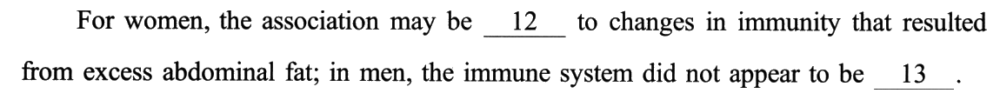
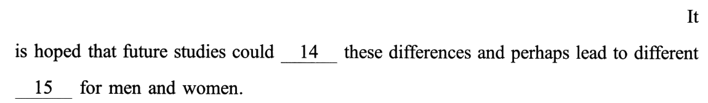
⑤ 建议：研究还在路上，你现在就能做两件事——多做有氧、吃地中海式饮食
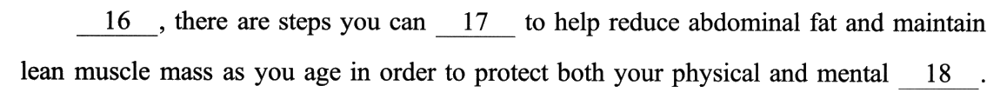
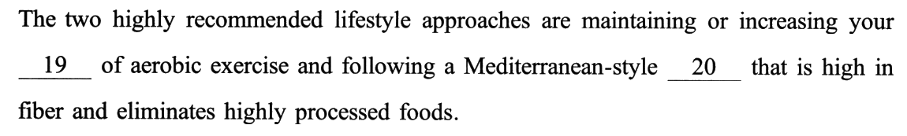
02逐空精解（点选项即判 · 再看解析）
每空 0.5 分。题干只引空格所在的短语，完整句子看 01 的句条。本篇是一篇科研报道：逻辑空只有 2 个（3 while · 16 Meanwhile），其余 18 个都是「研究里的某一格该填什么」。三件事最要紧：① 每个空先找它在同一句里的搭档——1 peaks 的搭档是 levels out 和 decline、4 accumulation 的搭档是 loss、6 delay 的搭档是 prevent、13 involved 的搭档是 12 那半句（02++）；② 干扰项爱「只搭一边」——watch one’s step、count steps、follow a routine、follow a prescription、time runs out，单看空格一侧都对，左右一起念就散（02+++）；③ 语气只说到证据那么满——might 配 possibility，研究者只能 include、compare、explain，不能 modify 数据、alter 差异（02++++）。另有两道四个选项后面全接 to（8 compare／devote／convert／apply A to B · 12 be attributable／superior／parallel／resistant to），介词定不了。
02+⭐⭐⭐ 科研报道八格表：二十个空挂在八个环节上——先认「这句是研究的哪一格」，再填这一格该有的词（本页最值钱的一段）
一篇转述一项研究的科普，句子的功能几乎是固定的：先摆现象，再报发现，接着说意义、方法、结果、机制、展望，最后给读者建议。每一格的空有固定长相——认出格子，四个选项里往往只剩一个「这一格会用的词」。
| 格 | 句 | 这一格在干什么 | 空 | 这一格的词长什么样 |
|---|---|---|---|---|
| ① 现象 | ①❷ ①❸ | 一般规律 ＋ But 例外 | 1 peaks · 2 generally · 3 while | 趋势动词（升 — 平 — 降）、「一般」副词、让步连词 |
| ② 发现 | ②❶ | One study found that A and B are associated with C | 4 accumulation | 变量名词——和并列的另一个变量同号（都是坏变化） |
| ③ 意义 | ②❷ | This suggests the possibility that … | 5 possibility · 6 delay | 「可能」类名词（配 might）、「挡」类动词（配 prevent） |
| ④ 方法 | ③❶ | looked at data that … and compared … | 7 included · 8 compared | 研究动作：数据包含变量、研究者比较两组数据 |
| ⑤ 结果 | ③❷ | They found that people with X scored worse … | 9 with · 10 scored · 11 went by | 「人 ＋ with ＋ 指标」、测量动词（score）、时间推移 |
| ⑥ 机制 | ④❶ | For women … ; in men … | 12 attributable · 13 involved | 因果扣环（attributable to）、「有没有份」（involved） |
| ⑦ 展望 | ④❷ | It is hoped that future studies could … | 14 explain · 15 treatments | 研究「懂」的动词 ＋ 医学「治」的名词 |
| ⑧ 建议 | ⑤❶ ⑤❷ | Meanwhile, there are steps you can take … | 16 Meanwhile · 17 take · 18 wellbeing · 19 level · 20 diet | 换人换时的连接词、take steps、健康名词、运动量、饮食 |
02++🤝 搭档表：二十个空，每个都在同一句里有一个「搭档词」——18 个靠搭档就能定，跨句的只有 14 与 16
本篇几乎没有「要回读全文才能做」的空。做法：每个空先找同一句里和它绑在一起的那个词（并列的另一半、搭配的另一头、对照的另一边、修饰它的从句），再看选项。
| 空 | 同句搭档 | 绑法 | 搭档给出的条件 |
|---|---|---|---|
| 1 peaks | levels out · then starts to decline | 三个并列谓语 | 曲线缺第一段的终点：升到头 |
| 2 generally | we · 一般现在时 | 主语 ＋ 时态 | 人人如此的规律 |
| 3 while | may not be（省了 inevitable） | 主从句同一个词一正一反 | 让步 |
| 4 accumulation | muscle loss | and 并列 | 同号：不健康的变化 |
| 5 possibility | might help | 同位语从句的情态 | 推测语气 |
| 6 delay | prevent | or 并列 ＋ help | 同向退一步：挡坏事 |
| 7 included | data … measurements | 主语 ＋ 宾语 | 整体包含部分 |
| 8 compared | that data to reported changes | V A to B | 两组数据放一起：比较 |
| 9 with | people … higher measures | 人 ＋ 指标 | 「带有」 |
| 10 scored | worse on measures | V ＋ worse on | 测量 ⟹ 得分 |
| 11 went by | the years | 主语 ＋ 短语动词 | 时间流逝（＝ as we age） |
| 12 attributable | to changes … that resulted from | be ___ to ＋ 因果从句 | 再扣一环因果 |
| 13 involved | For women … immunity（分号前半句） | 分号两边对照 | 话题照抄、结果反号 |
| 14 explain | these differences（回指上句） | 跨句回指 | 研究能做的：弄懂 |
| 15 treatments | lead to different … for men and women | explain … and lead to | 先懂、再治 |
| 16 Meanwhile | 上段 future studies could ↔ 本句 you can | 跨段接缝 | 换人换时、方向不变 |
| 17 take | steps … to help reduce | V ＋ steps ＋ to do | 采取措施 |
| 18 wellbeing | both physical and mental | both A and B 修饰 | 两边各念一遍都通 |
| 19 level | maintaining or increasing | 动词 ＋ 宾语 | 能升降的量 |
| 20 diet | that is high in fiber | 定语从句 | 吃的东西 |
📐 句内自足 18／20＝90%，与 2017 并列 2010 年以来第二高（最高 2016 的 95%）。⚠️ 口径：4 若按「要往后读到 excess 才定」、9 若按黄皮书「照应第二段首句」算跨句，则 16／4＝80%。跨句的两个都在「换话题」的地方：14 回指上一句的男女差异、16 站在研究与读者的接缝上。⟹ 科研报道句子短、一句一事，完形难度主要在选项，不在找线索——所以下一节的「单边搭配」才是这篇的真坎。
02+++🪤 单边搭配陷阱：干扰项只和空格的一侧搭得上——左边对、右边散，或者中文对、英文散
本篇十几个干扰项是同一个造法：挑一个和空格某一侧真能组成搭配的词，让人「眼熟」就选。破法只有一个：把空格左右两边连同后面的修饰成分一起念。
| 空 | 干扰项 | 它搭得上的那一侧 | 搭不上的那一侧 |
|---|---|---|---|
| 17 | watch | watch one’s step（走路小心） | steps 是复数、没有物主代词；后面 to help reduce … 要的是「做事」 |
| 17 | count | count steps（计步） | there are steps you can count to help … 不是建议的说法；下句的饮食也不是计步 |
| 20 | routine | follow a routine（照常规办） | that is high in fiber——常规不含纤维 |
| 20 | prescription | follow a prescription（遵医嘱）＋ 上文 treatments | high in fiber；而且是 lifestyle approaches，不是处方 |
| 11 | ran out | time runs out（时间用完） | 本句要的是「逐年变差」的持续过程，不是期限将至 |
| 11 | drew in | the nights draw in（天黑得早） | 主语是 years |
| 15 | symptoms | 上句 did not appear（像「没有症状」） | lead to different symptoms——研究不会带来症状 |
| 15 | demands | demand for（对……的需求） | 研究带来「对男女的需求」不通 |
| 10 | lived · managed | live on · manage on（靠……过活） | 宾语是「智力测量值」 |
| 9 | against | 中文「防腹脂」 | higher measures 是实测含量，不是要防的东西 |
| 18 | coordination | 中文「身心协调」 | 英文不说「身体与心理的协调」；both … and 要两边各成立 |
| 7 | modified | 中文「研究者调整数据」的印象 | 主语是 data，数据不会修改测量值 |
| 14 | alter · remove | these differences 可以被改变？ | 主语是 studies：研究改不了生理差异 |
02++++📏 语气表 ＋ 研究者的动词边界：观察性研究只能说到「可能」，研究者只能「包含、比较、解释」
这是一项相关性研究（研究者自己也说只发现了相关、不能确定因果）。原文每一处结论都垫着一个「打折词」——答案词的语气不能比原文更满；同时，研究者在句子里能做的动作也有边界。
| 句 | 原文的打折词 | 空 | 正解（够谨慎） | 被淘汰的「说过头」 |
|---|---|---|---|---|
| ①❸ | may not be | 3 | while（让步：未必） | — |
| ②❶ | are associated with | 4 | accumulation（只是变量） | — |
| ②❷ | suggests · might help | 5 · 6 | possibility · delay（防不住至少推迟） | requirement · decision（强制、定论） |
| ④❶ | may be · did not appear | 12 · 13 | attributable · involved | resistant（与因果链相悖） |
| ④❷ | It is hoped · could · perhaps | 14 · 15 | explain · treatments | alter · remove（研究改不了差异） |
| 动作者 | 能做（正解） | 越界（干扰） |
|---|---|---|
| 数据 data | 7 included 测量值 | modified · supported · predicted 测量值 |
| 研究者 researchers | looked at · 8 compared 数据 | devoted · converted 数据 |
| 将来的研究 future studies | 14 explain 差异 · lead to 15 treatments | alter · remove · spread 差异；lead to symptoms／demands |
| 生活方式 lifestyle factors | help prevent or 6 delay 衰退 | utilize · ensure · seek 衰退 |
| 你 you | 17 take steps · maintain or increase 19 level · follow a 20 diet | watch／count steps · follow a routine／prescription |
⭐⭐ 两条规矩：① 情态定类型——同位语从句里是 might／may，抽象名词只能是 possibility 一类；② 主语定动作——先问「谁在做」，再问「这个谁做得到吗」：数据只会「包含」，研究只会「比较、解释」，生活方式只会「帮着挡」。⟹ 新卡 R311；对照 2020 的「让步只让半步」（R289）——2020 是作者让步时打折，2021 是研究证据本身只够打折。
03考点分类（完形不背单个空，要看「这题在考什么」）
点某一类 → 下方列出该类所有空 → 点小格跳到解析卡。（分类依据不是「空格里填的是什么词」，而是「解这一题你得做什么动作」——所以 1 peaks 虽是动词辨析，定它的是同句 levels out、decline 画出的曲线，归「上下文语义」；13 involved 定它的是分号前半句的男女对照，归「上下文语义」；18 wellbeing 是 physical and mental wellbeing 现成搭配，归「固定搭配」；19 level 要判断「能升降的量」，归「词义辨析」。）
| 年份 | 词义辨析 | 固定搭配 | 逻辑关系 | 上下文语义 | 这一年压在哪 |
|---|---|---|---|---|---|
| 2007 | 9 | 5 | 4 | 2 | 词义（占 45%） |
| 2008 | 9 | 6 | 2 | 3 | 六道实义动词的主语适配 |
| 2009 | 6 | 5 | 5 | 4 | 四类几乎持平 |
| 2010 | 9 | 4 | 4 | 3 | 形容词与副词的「方向」 |
| 2011 | 6 | 3 | 6 | 5 | 一根因果箭头的方向 |
| 2012 | 5 | 4 | 3 | 8 | 作者的应然立场 ＋ 首尾镜像 |
| 2013 | 3 | 7 | 4 | 6 | 空格后的介词短语 ＋ 比方与发现同构 |
| 2014 | 5 | 6 | 3 | 6 | 按段定正负 ＋ 一个比喻贯穿全文 ＋ 说明书式搭配 |
| 2015 | 6 | 6 | 3 | 5 | 研究报道的槽位套话 ＋ 「不止于表面」四连 |
| 2016 | 6 | 3 | 6 | 5 | 流程时间轴 ＋ 许可与现实 ＋ 具体动作的画面 |
| 2017 | 7 | 4 | 3 | 6 | 一条因果链的扣环词 ＋ 递进台阶 ＋ 框架定正负 |
| 2018 | 5 | 4 | 4 | 7 | 两本账的翻账键 ＋ 对照实验平行句 ＋ 主题词替身 |
| 2019 | 4 | 4 | 4 | 8 | 清单编号 ＋ 人迹替身链 ＋ 首尾扣环 |
| 2020 | 5 | 6 | 3 | 6 | 三声部 ＋ 让步档位 ＋ 同构旧例 |
| 2021 | 3 | 7 | 2 | 8 | 科研报道八格 ＋ 同句搭档 ＋ 单边搭配 |
句内自足（18）：其余全部（13 的对照在分号前半句、仍在同一句号内）。
⟹ 句内比例 90%（2010 65% → 2011 75% → 2012 80% → 2013 70% → 2014 85% → 2015 65% → 2016 95% → 2017 90% → 2018 65% → 2019 60% → 2020 85% → 2021 90%），与 2017 并列 2010 年以来第二高。⚠️ 口径：4 若按「往后读到 excess 才定」、9 若按黄皮书「照应第二段首句」算跨句，则 16／4＝80%。
⚠️ 照实说：1、4、15、19 勉强也能分（peaks 唯一说「到头」、level 唯一是「量」），但理由是做完才看清的；2019 成立 11 次、2020 只有 3 次，2021 回到 5 次（⟹ R74）。
04完形六大打法（本篇取证）
🔁 十六篇完形（2007–2021 ＋ 2022）信号类型对照：2022 靠明信号词 · 2007 靠结构性信号 · 2008 靠动词与主语适配 · 2009 靠语用功能 · 2010 靠叙事方向 · 2011 靠因果箭头 · 2012 靠应然立场与首尾镜像 · 2013 靠介词框架与比方—发现同构 · 2014 靠按段定正负与贯穿比喻 · 2015 靠研究报道槽位与「不止于表面」四连 · 2016 靠流程时间轴、许可与现实、动作画面 · 2017 靠因果链扣环词、递进台阶、框架正负号 · 2018 靠两本账的翻账键、对照实验平行句、主题词替身 · 2019 靠清单编号、人迹替身链、首尾扣环 · 2020 靠三声部、让步档位、同构旧例 · 2021 靠科研报道八格、同句搭档、整串念破单边搭配。
🧠 话题：与 2014（像练肌肉一样练大脑）、2009（智力的代价）、2008（高智商与遗传疾病）同属「智力／大脑」话题；与 2017（拥抱有益健康）同属「健康科普」——完形最爱的两类话题在这一篇里合在一起：大脑 ＋ 健康生活方式。
05固定搭配 & 熟词僻义（这些是死记就得分的）
0680 个选项词速查（完形的真正词汇量）
完形一篇＝80 个高频词的辨析现场，绿底是正确项。默写模式会糊住中文释义——先自己说出意思，点单个格子可单独揭开。本篇 80 个词里有四组值得成组背：8 题四个 V A to B（compare／devote／convert／apply——比较、专用、转变、应用）；12 题四个 be ___ to（attributable／superior／parallel／resistant——归因、优于、类似、抵抗）；11 题四个短语动词（run out／set off／go by／draw in——用完、出发、流逝、天短）；16 题四个段首副词（Meanwhile／Likewise／Therefore／Instead——并行、相似、因果、替代）。
07长难句精析（点 01 里的句条跳到这里）
- 主干：Fluid intelligence is the type of intelligence——「X is the type of Y」是下定义的标准句型。
- that 定语从句：that has to do with A and B——A＝short-term memory，B＝the ability to think …；and 连的是两个名词，不是两个动词。
- B 的内部：the ability ＋ to think（不定式作定语）＋ quickly, logically, and abstractly（三个副词并列）＋ in order to solve new problems（目的状语）。
- 一个主语 It、三个谓语：It peaks in young adulthood，levels out for a period of time，and then generally starts to slowly decline。
- ⭐ 三个谓语按时间顺序排开 ⟹ 一条曲线；and then 标出最后一段。
to slowly decline是分裂不定式（to 和动词之间插副词），口语与科普常见，考场作文少用。as we age：as 引导时间状语从句（随着），age 是动词「变老」。
- 一主两谓：The researchers looked at data … and compared that data to reported changes …——第二个 and 才是连谓语的，前面那个 men and women 的 and 只连名词，别在那里断句。
- data 后的定语从句：that included measurements of A and B（lean muscle · abdominal fat）from more than 4,000 … men and women——from 短语说明测量值取自谁。
- middle-to-older-aged：连字符复合形容词，「中老年的」。
- over a six-year period：时间状语，修饰 changes（六年间的变化）。
- 主干：They found that ＋ 宾语从句。
- 从句的主语很长：middle-aged people ＋ with higher measures of abdominal fat（介词短语作后置定语）；谓语到 scored 才出现——找谓语时跳过 with 短语。
- scored worse on measures of fluid intelligence：score ＋ 比较级 ＋ on（在……方面）。
- as the years went by：时间状语从句，时态随 found 用过去时。
- 两个分句由分号连接：For women, the association may be attributable to changes in immunity …；in men, the immune system did not appear to be involved。
- ⭐ 两个状语 For women ／ in men 都提到句首——对照的「标签」放在最前面，读者一眼看出是男女对比。
- that resulted from excess abdominal fat：定语从句修饰 changes in immunity——一句里两环因果：腹脂 → 免疫变化（resulted from）→ 关联（attributable to）。
- the association：回指 ②❶ 的 are associated with——动词变名词的回指。
- 主系表：The two highly recommended lifestyle approaches are A and B——表语是两个动名词短语，正好对应 The two。
- A＝maintaining or increasing your level of aerobic exercise（or 连两个动名词，共用宾语）。
- B＝following a Mediterranean-style diet ＋ that 定语从句（is high in fiber and eliminates highly processed foods——从句里又有两个并列谓语）。
- ⭐ 三个 and 三个层次：A and B（两条建议）· high in fiber and eliminates（饮食的两个特点）· 别和上一句的 reduce … and maintain 混。
08可搬进作文/翻译的表达
本篇是一篇「现象 → 研究 → 机制 → 展望 → 建议」的科研报道，最能搬的是四类句子：趋势句（图表作文）、研究发现句（举论据）、谨慎推论句（may／might／suggest）、「研究还要等，你现在就能做」的建议句（大作文收尾）。话题上，「健康生活方式」「老龄化与终身学习」「科学研究的价值」都能接上。下面例句全部自拟，只借句式骨架。